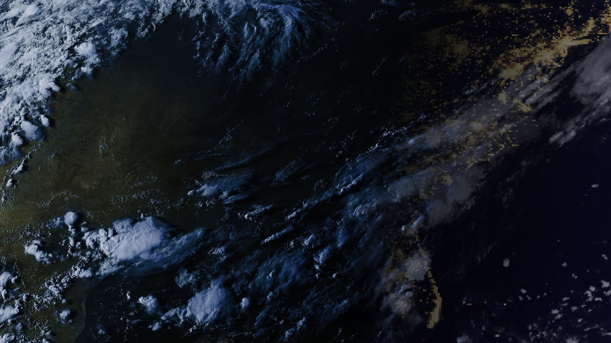

Louisville · current conditions
88°F
50% humidity1017.9 mbcalm24h 64–88°F
📻 received over 144.390 MHz from KB4KY · as of 19:32 UTC
Outlook · 2026-08-28
STORM RISK: LOW
Partly cloudy, thickening
Dry upper air over the area (suppression).

Latest Eastern-US capture at native resolution · day/night history ▸